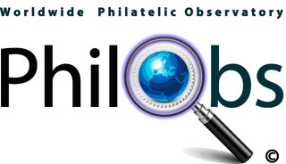

L'Observatoire philatélique mondiale

L'Observatoire philatélique mondiale, créé tout récemment, vous présente ses meilleurs vœux pour la Nouvelle Année 2015, et souhaite développer avec vous une coopération bénéfique pour les deux parties . En effet, PhilObs vise, principalement, à:
• Fournir un service de veille du marché international de ventes de timbres-poste à l'attention des autorités officielles émettrices de timbres-poste, des collectionneurs de timbres-poste et des philatélistes, ainsi qu'à l'attention d'autres parties et organisations intéressées du secteur philatélique,
• Analyser les pratiques abusives du secteur philatélique aux conséquences négatives pour l'image d'une nation et de son intégrité, afin de défendre et sauvegarder le timbre-poste en tant qu'«Ambassadeur en miniature» de la nation y compris l'héritage culturel de celle-ci,
• Fournir des conseils, notamment aux pays en développement, en faveur de la mise en œuvre de meilleures pratiques de gestion de leurs timbres-poste dans tous les aspects de la chaîne de valeur afin que lesdits pays puissent gérer, commercialiser et promouvoir leur philatélie, en toute indépendance,
• Servir de point central d'information aux collectionneurs de timbres-poste et philatélistes nécessitant une confirmation sur l'authenticité des timbres-poste en leur possession ou qu'ils aimeraient acquérir.
Veuillez envoyer un courriel à : phil.obs@progress-marketing.tn et/ou écrire à :
Mme. Maria Zofia Libera, Gérante
Progress – Etudes de Marketing (PEM)
Observatoire philatélique mondiale (WPO)
Bureau A-307, Ariana Centre
2080 Ariana, Tunisie
A Noter:
L'Observatoire philatélique mondiale est le nouveau partenaire de la Philatelic Webmasters Organisation dans son long combat contre les émissions illégales de timbres-poste .
La propriété intellectuelle de la société "PROGRESS - Études de marketing", ainsi que du nom et du logo de "l'Observatoire philatélique mondiale (WPO)" a été enregistrée en Tunisie en décembre 2014.
|